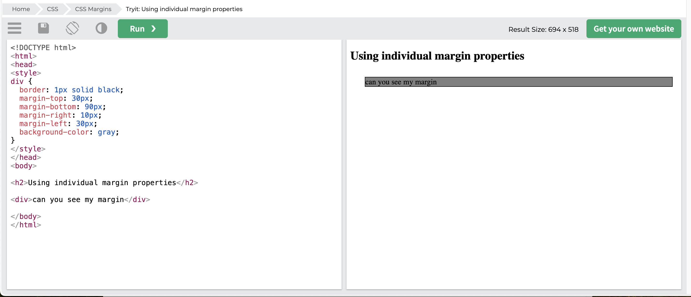
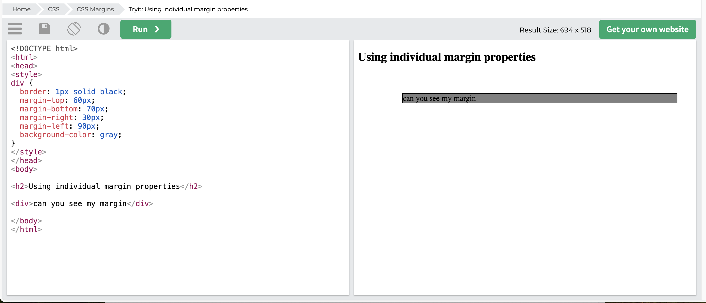

3 April 2025
What is Margin...
The Margin is the space around an element. It is used to move an element up or down on a page as well as left or right.
Margins are completely transparent and do not have any background color.
They clear the area around the element, pushing adjacent elements away to create the desired gap.
Each side of the element can have a different margin size, which you can change individually.
imagine the element is a box and Margin is a space.
Margin - Individual Sides
CSS has properties for specifying the margin for each side of an element:
- margin-top
- margin-right
- margin-bottom
- margin-left
Adds space outside an element, creating gaps between elements.
Example:
p {margin-top: 100px;
margin-bottom: 200px;
margin-right: 300px;
margin-left: 400px;
}
Margin - Shorthand Property
To shorten the code all in one.
Example:
If the margin property has four values - Top Right Bottom Leftp {
margin: 100px 300px 200px 400px;
}
Margin - Auto
To horizontally center the element within its container. automatically calculate the left and right margins.
Example:
p {width: 200px;
margin: auto;
}
Example:
Before and After adjustment.
Can you see the different?
